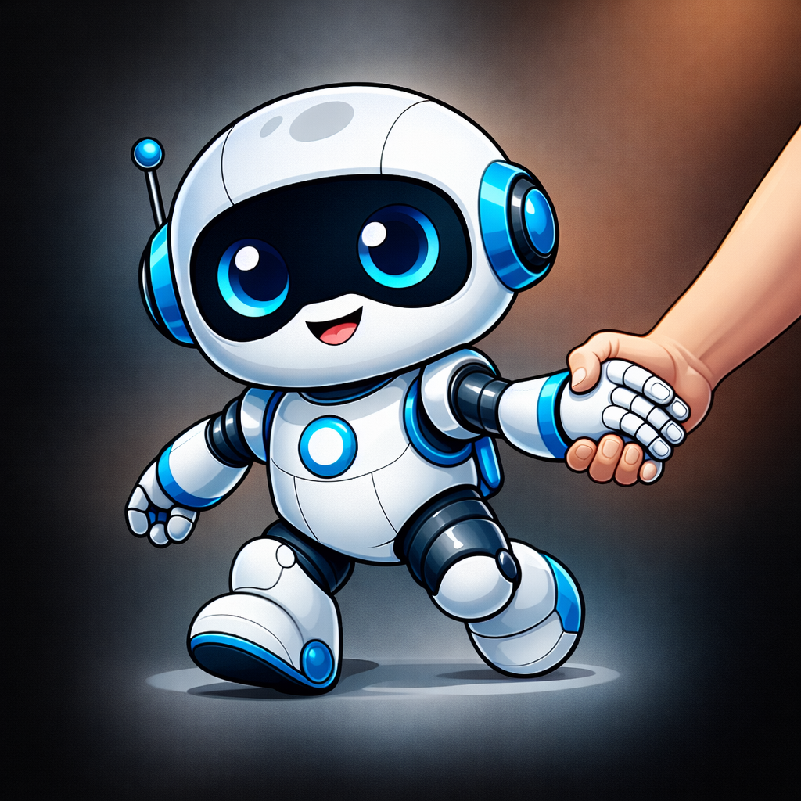

Goal
How to build a SaaS business
Full plan decomposition covering market research, product strategy, go-to-market, pricing, and launch sequencing — executed with web research and structured outputs at each step.
Open Source · MIT License · Python 3.11+
cuddlytoddly is a plan-first AI agent framework where every step is visible, editable, and under your control.
cuddlytoddly builds an explicit task plan before touching anything — a visible, editable graph of steps and dependencies. Inspect it, change it, or redirect it at any point. When you're ready, it carries the plan out with real tools, quality-checks the results, and keeps going until the job is done.

Most LLM agents jump straight into action and hope for the best. cuddlytoddly builds a complete task graph before executing anything, so you always know what it intends to do — and can change that intent before, during, or after execution.
A plain-English goal is seeded into the task graph as the root node. Nothing runs yet.
Before decomposing the goal, the planner reads it carefully and extracts every concrete fact you've already stated — budget, size, hard constraints, locations, roles — and pre-fills those as known context fields. It then identifies what's genuinely missing and surfaces only that for your optional input. Facts that can be fetched at runtime (market prices, public data) are never asked of you. This grounded context flows into every task in the plan.
The planner decomposes the goal into a DAG of tasks — each with declared dependencies and expected outputs — using the clarified context. The raw plan passes through an optional self-review pass (the LLM critiques its own draft for completeness and realism), then structural validation and constraint checks before any node is committed. You can inspect the full plan and edit it freely before anything runs.
The plan is live and mutable throughout execution. Pause the LLM, edit a task's description or dependencies, promote a task into a subgoal for a finer breakdown, or switch to a different goal entirely. Execution resumes from the updated graph — only affected branches re-run, everything already completed stays done.
The orchestrator picks up nodes whose dependencies are met and dispatches them in parallel, up to the configured worker count.
Each task runs as a multi-turn LLM loop with access to real tools: code execution, file I/O, web access, and any custom skills you've registered. Results are concrete outputs passed directly to downstream tasks, not summaries.
The QualityGate compares each result against the task's declared outputs. If something is missing, a bridging task is injected and the gap is closed before downstream nodes proceed.
Every graph mutation is appended to a JSONL event log. Restart after a crash and the system picks up exactly where it left off — completed tasks stay done, only interrupted ones re-run. When resuming, the full token history from the prior session is restored so the UI always shows the correct cumulative count.
goal → LLMPlanner → [extract facts + clarify] → [decompose] → [scrutinize?] → [validate] → [constraints]
│
TaskGraph ← inspect & edit anytime
│
Orchestrator
├── LLMExecutor + tools + skills
└── QualityGate (verify / bridge)
│
EventLog (JSONL) → crash-proof replayEvery run produces a standalone interactive snapshot — the full task graph with node details, results, and a replay of the plan's evolution — and an optional terminal view for headless environments. The two examples below are complete, unedited runs.
Full plan decomposition covering market research, product strategy, go-to-market, pricing, and launch sequencing — executed with web research and structured outputs at each step.


Research-backed plan covering market rate benchmarking, timing strategy, argument construction, and conversation scripts — grounded in publicly available salary data fetched at runtime.
Interactive snapshots are fully self-contained HTML files — no server connection required. Export your own via the web UI's ↓ Export → Snapshot HTML button.
The full task graph — every step, dependency, and expected output — is built and visible before the first tool is called. No action without a declared intent.
Before planning, the system extracts every concrete fact already in your goal — budget, constraints, size, location — and pre-fills them as known fields. Only genuinely missing information is surfaced for input. Tool-fetchable facts are never asked of you.
An optional second LLM call reviews each draft plan for goal coverage, task realism, output completeness, and missing implicit steps before anything reaches the graph.
A deterministic pass after validation catches cycles, removes duplicate edges, strips orphaned inputs, and resolves ghost nodes — before any node executes.
Any task can be promoted to a subgoal at any time for a finer-grained breakdown. The planner decomposes it into a sub-DAG without touching the rest of the plan.
Edit task descriptions, add or remove dependencies, and restructure the graph while execution is running. Only affected branches re-run — completed work is always preserved.
Pause the LLM at any point, inspect progress, make changes, then resume — or switch to a different goal entirely. The system stops cleanly and picks up from the updated state.
Tasks execute with real tools: code execution, file I/O, web access. Add custom skills by dropping a SKILL.md folder into the skills directory — no code changes required.
The QualityGate checks each result against declared outputs. Missing pieces automatically inject a bridging task so the plan stays coherent without manual intervention.
Every mutation is logged to JSONL. Restart after a crash and completed tasks stay done — only interrupted work re-runs. Token history is restored so the UI always shows the correct cumulative count.
Swap between Claude, OpenAI, any compatible API, or a fully local llama.cpp model with one config line. Backend auto-detected from your environment on first run.
A live curses terminal for headless use and a web UI that shows the full task graph in real time, lets you edit nodes directly, supports mid-session goal switching, and exports standalone interactive HTML snapshots.
Run entirely offline with llama.cpp on Apple Silicon, NVIDIA, or CPU. Full privacy, no API costs, no data leaving your machine.
The planning and execution layers are fully model-agnostic. Switch backends by editing [llm] backend in config.toml — every prompt, schema, and tool call works identically across all backends.
config.toml on first run and auto-detected from your environment: ANTHROPIC_API_KEY set → claude, OPENAI_API_KEY set → openai, neither → llamacpp. Edit [llm] backend in config.toml to change it at any time.pip install cuddlytoddly[claude] # Anthropic Claude
pip install cuddlytoddly[openai] # OpenAI / compatible
pip install cuddlytoddly[local] # Local llama.cpp
pip install cuddlytoddly[all] # Everythingexport ANTHROPIC_API_KEY=sk-ant-...
# or OPENAI_API_KEY — whichever key is set becomes the default backend on first runcuddlytoddly "Write a market analysis for electric scooters"
# The web UI opens automatically showing the full task plan.
# Inspect or edit it before execution starts, or just let it run.
# Pause, redirect, or promote any task to a subgoal at any time.
# All state is persisted — resume exactly where you left off after a crash.
# Print your config path to tune backends, scrutinize_plan, budgets, and more:
python -c "from cuddlytoddly.config import CONFIG_PATH; print(CONFIG_PATH)"Requires Python 3.11+ and git on your PATH (for the DAG visualiser).
Every component is importable and independently configurable. Swap backends with a single argument — planning, execution, and quality-checking all work identically across Claude, OpenAI, and llama.cpp.
from cuddlytoddly.planning.llm_interface import create_llm_client
from cuddlytoddly.planning.llm_planner import LLMPlanner
from cuddlytoddly.planning.llm_executor import LLMExecutor
from cuddlytoddly.engine.quality_gate import QualityGate
from cuddlytoddly.engine.llm_orchestrator import Orchestrator
from cuddlytoddly.core.task_graph import TaskGraph
from cuddlytoddly.skills.skill_loader import SkillLoader
# Swap "claude" → "openai" or "llamacpp" — everything else stays identical
llm = create_llm_client("claude", model="claude-opus-4-6")
graph = TaskGraph()
skills = SkillLoader()
orchestrator = Orchestrator(
graph=graph,
planner=LLMPlanner(
llm_client=llm, graph=graph,
skills_summary=skills.prompt_summary,
scrutinize_plan=True, # LLM self-reviews each draft plan before execution
),
executor=LLMExecutor(llm_client=llm, tool_registry=skills.registry),
quality_gate=QualityGate(llm_client=llm, tool_registry=skills.registry),
)
orchestrator.start() # graph is live and editable at any point
# Pause execution at any time:
orchestrator.stop_llm_calls()
# Promote a task to a subgoal for a finer-grained breakdown:
# set its node_type → "goal", expanded → False; planner picks it up next cycle